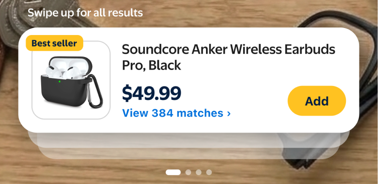
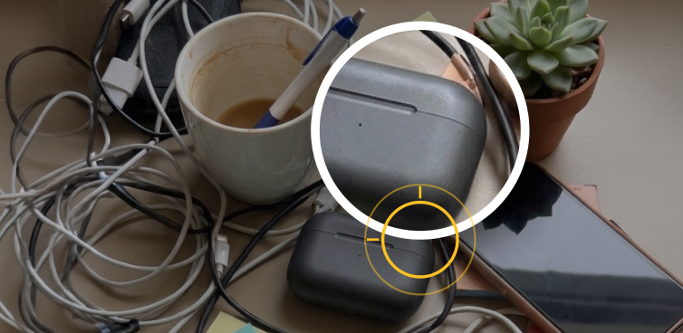
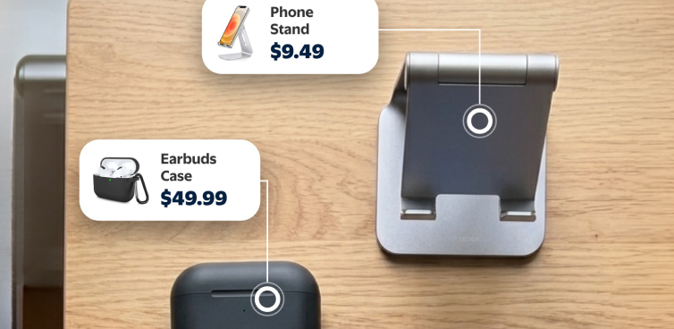
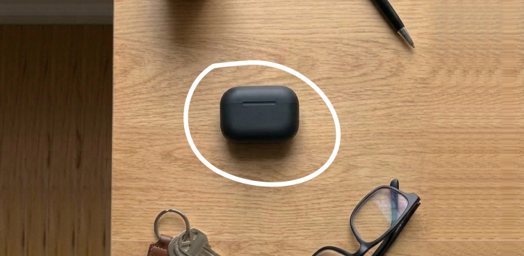

Four interactive, clickable explorations of an AI visual-search entry point for the Walmart app — each one starting from the home screen, through activation, into the camera's core interaction, and out to a result. Click through by hand to demo live, or hit Play to run the whole sequence hands-free for recording.

A single swipeable match card floats above the live feed as the top of a stacked deck — swipe for alternates, or pull up for the full result grid. Minimal chrome, maximum camera.

No fixed center reticle — tap anywhere in frame and a loupe magnifies the exact spot before committing, so you can pinpoint one item in a cluttered scene with a single confident result.

Inspired by Amazon Lens: matches never collapse into a sheet. Every detected object gets its own pinned card with a connector line straight into the live scene — compare in place.

Freehand lasso selection replaces the fixed reticle for precise, user-drawn targeting. Combine the circled item with a typed keyword to refine results live before committing to search.